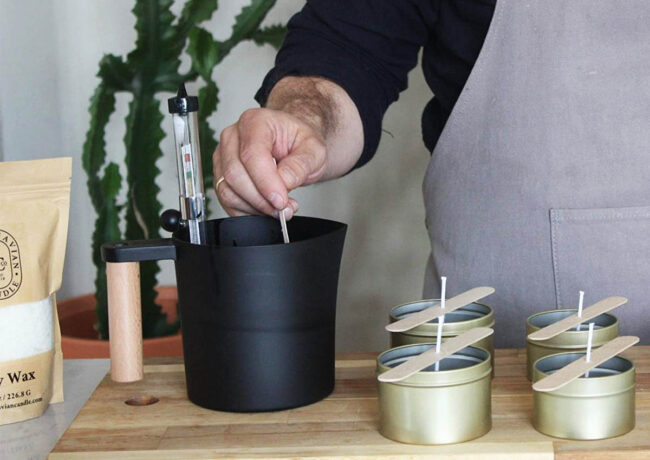

Soy Candles
One of the most enjoyable activities on a relaxing afternoon is making something you can use! Make a candle with someone you love!
HomeMade Candle Kits have everything you need to do Self-Care the Natural Way
We recommend using repurposed containers for this project! Our favorites are 4oz -8oz glass jars
Supply List
- 16oz. Soy Flakes
- .05oz essential oil blend
- 3oz beezwax
- 10cm wick included (trim to fit container height)
- melting pot
- 2 or 3 small to medium jars
- spatula
- wick stablizers
Instructions
- Put Beeswax flakes in cookware
- Slowly heat to 130degrees Fahrenheit or 30 degrees Celsius
- Add Soy Flakes
- After wax begins to melt, add essential oils
- Keep on low heat, be careful not to boil
- As wax melts, prep jars
- Use a small amount of wax to affix wick base to bottom of container
- Use included wick stablizer to position wick near the center of smaller containers
- After wick is set, gradually pour wax mixture into containers
- Adjust wick as needed
- Let cool until wax hardens
- Enjoy your home-made ambiance!
Perfect for a "Family Craft Night" or gift idea! Make "Self-Care Time" more meaningful!

Photo:Amazon.com